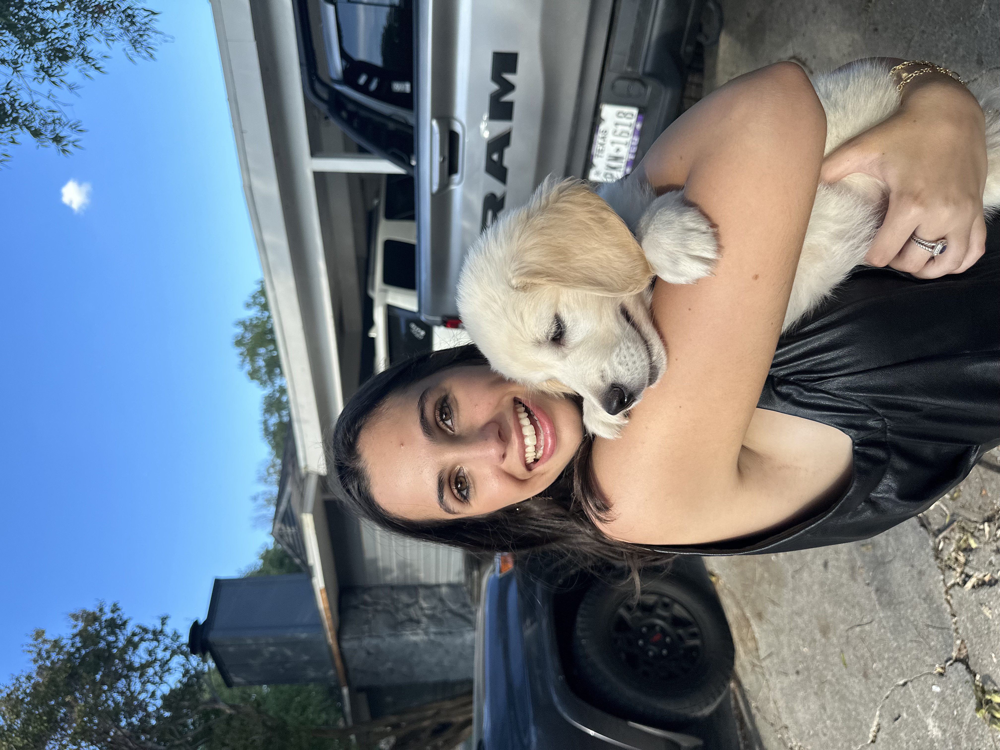

Welcome
Welcome to my DCDA 40833 Skills Portfolio. This site highlights the projects and lab assignments I’ve completed throughout the semester, showcasing my growth in digital culture and data analytics. Through web development, data visualization, and interactive mapping, this portfolio reflects both my technical skills and my ability to think critically about digital media.
About Me
Who I am: Hi, I’m Jacqui Cook, a senior Strategic Communication major. I’m especially interested in how media, branding, and digital culture influence the way people connect and make decisions. A fun fact about me is that I was born in Melbourne, Australia, which helped shape my curiosity about the world and different cultures.
My interests: I love traveling and exploring new places, especially trying new restaurants with friends. In my free time, I enjoy playing tennis, staying active, and listening to music. I was drawn to DCDA because I’m interested in understanding how data, technology, and digital platforms shape culture, communication, and the way people interact online.
What I hope to learn: I’m looking forward to gaining more confidence in my technical abilities and learning how to apply digital and data skills to topics I’m genuinely interested in.

My Work
Click on any card below to view that lab assignment.
Semester Reflection
What I learned: Throughout this course I learned how digital tools can be used to analyze and communicate information. I gained experience working with HTML and CSS to build a website, creating data visualizations with Tableau, evaluating AI tools, and designing an interactive map using Python and Mapbox. Each lab helped me better understand how digital technologies shape the way we collect, analyze, and present information.
Challenges I overcame: One of the biggest challenges was troubleshooting technical issues when my code or visualizations did not display correctly. For example, when embedding visualizations, I sometimes had to adjust file paths, fix small coding errors, and experiment with different solutions until everything worked properly. These challenges helped me become more patient and comfortable problem-solving with digital tools.
How I grew: At the beginning of the semester I had limited experience building websites or working with visualization tools. By completing each lab, I became more confident using HTML, CSS, and different digital platforms to create and present projects. I also improved my ability to analyze digital media and think critically about how information is communicated online.
Looking ahead: The skills I developed in this course will be useful in many areas related to communication and digital media. Understanding how to build simple websites, visualize data, and use emerging technologies like AI will help me communicate ideas more effectively in future academic and professional projects.